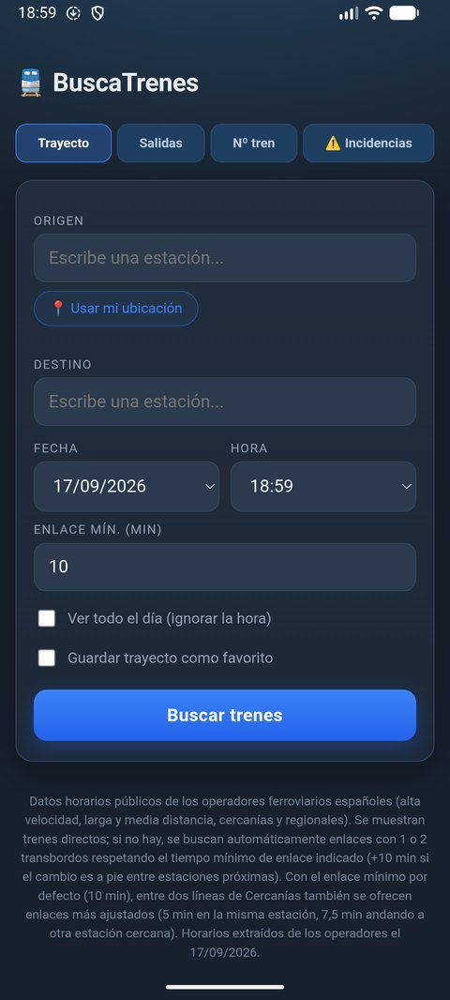
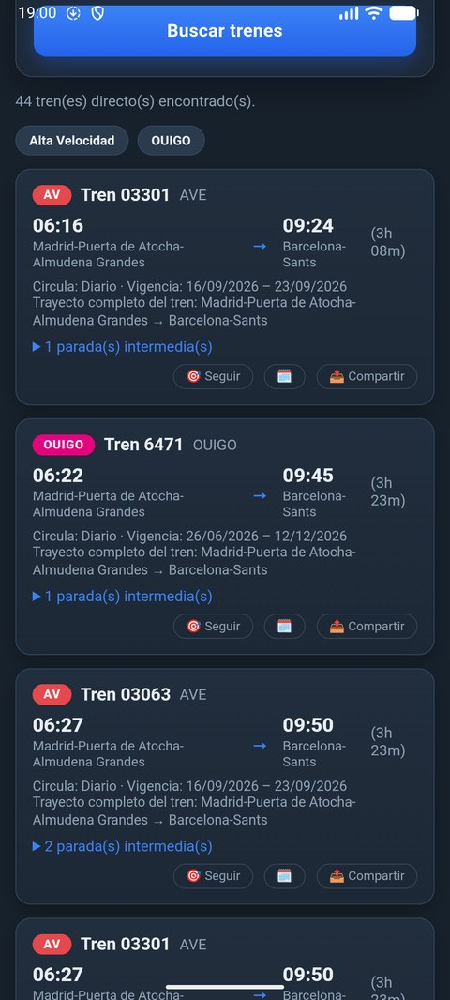
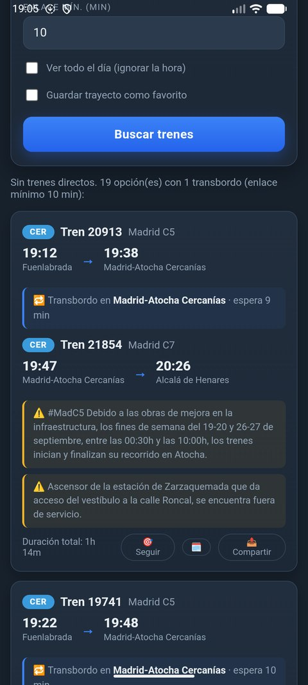
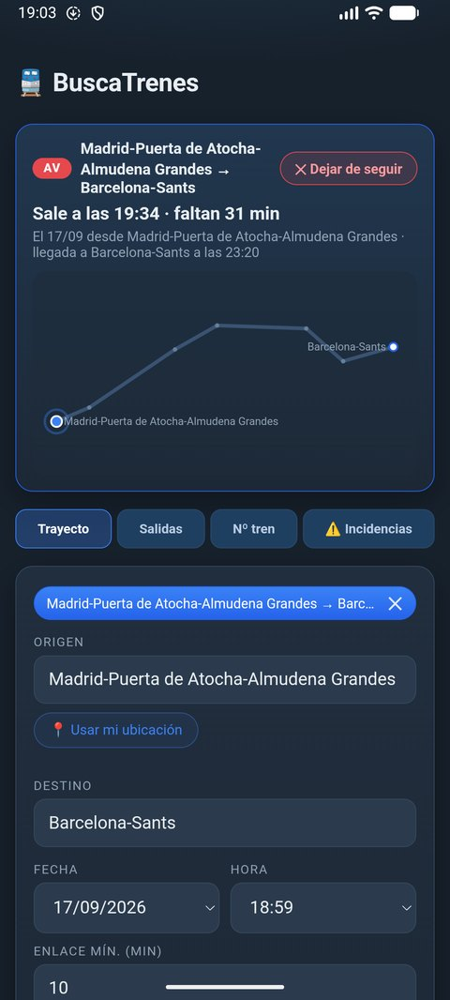
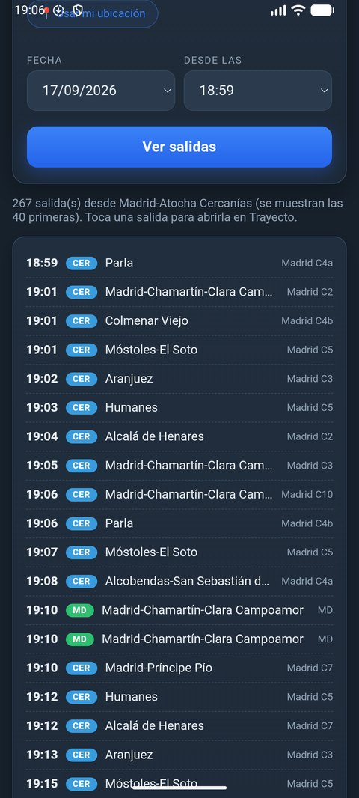
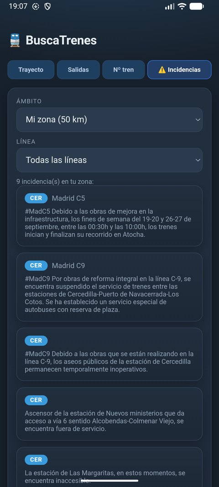

¿Qué es BuscaTrenes?
Un buscador de trenes sencillo, sin cuentas ni publicidad, con todos los horarios dentro de la aplicación.
Escribe una estación de origen y otra de destino, elige fecha y hora y BuscaTrenes te muestra los trenes directos de todos los operadores a la vez. Si no hay ninguno, busca automáticamente combinaciones con uno o dos transbordos respetando el tiempo mínimo de enlace que tú decidas. Como los horarios van embebidos, la búsqueda funciona sin cobertura; la red solo se usa para las incidencias y los retrasos en tiempo real.
Así se ve
Capturas tomadas en el emulador de Android con los horarios del 17/09/2026.






Funciones principales
Todo lo que hace la aplicación, resumido.
🚆Trenes directos
Todos los operadores en una sola lista, con número de tren, línea, duración, paradas intermedias, días de circulación y vigencia del horario.
🔁Transbordos automáticos
Si no hay tren directo, combinaciones con 1 o 2 transbordos, incluidos los cambios a pie entre estaciones próximas.
🎯Seguimiento del viaje
Cuenta atrás, croquis de la ruta, próximas paradas, avisos de transbordo y retraso oficial de RENFE o estimado por GPS.
🕒Salidas por estación
El panel de salidas de cualquier estación a partir de una hora, con destino final, línea y retraso si se conoce.
🔢Búsqueda por número
Localiza un tren por su número y consulta su recorrido completo con todas las paradas.
⚠️Incidencias
Obras, cortes y servicios alternativos publicados por los operadores, en tu zona o en toda España, y dentro de cada resultado afectado.
📍Tu ubicación
Rellena el origen con la estación más cercana a donde estás.
⭐Favoritos
Guarda tus trayectos habituales como accesos rápidos de un solo toque.
📤Compartir y calendario
Envía el itinerario por WhatsApp o correo, o añádelo a tu calendario con un toque.
✈️Sin conexión
Todo el buscador funciona en modo avión: los horarios viajan dentro de la app.
Cómo instalar la APK
La aplicación no está en Google Play, por lo que se instala directamente desde el fichero.
- Desde el navegador de tu móvil o tablet Android, pulsa Descargar APK y guarda el fichero
buscador_trenes.apk. - Abre el fichero descargado (desde la notificación de descarga o con la app Archivos).
- Si Android pregunta, permite a esa app instalar aplicaciones desconocidas y pulsa Instalar.
- Abre BuscaTrenes. Cuando uses «Usar mi ubicación» o el seguimiento, concede el permiso de ubicación mientras se usa la aplicación.
Los horarios tienen fecha de caducidad: cada versión nueva del APK incorpora los horarios vigentes. Si la app avisa de que sus datos tienen más de dos meses, vuelve aquí y descarga la última versión (se instala encima y conserva tus favoritos).
Descargas
Versión 1.0 · horarios extraídos el 17/09/2026 · página actualizada el 17/09/2026.
Aplicación Android
Instalable en cualquier Android 7.0 o superior. Firmada con clave de desarrollo: si ya tienes instalada una versión compilada en otro ordenador, desinstálala antes.
Descargar buscador_trenes.apk (3.4 MB)Manual de usuario
Guía completa con capturas: instalación, búsqueda, transbordos, seguimiento, salidas, incidencias, origen de los datos y preguntas frecuentes.
Descargar Manual_BuscaTrenes.pdf (2.6 MB)